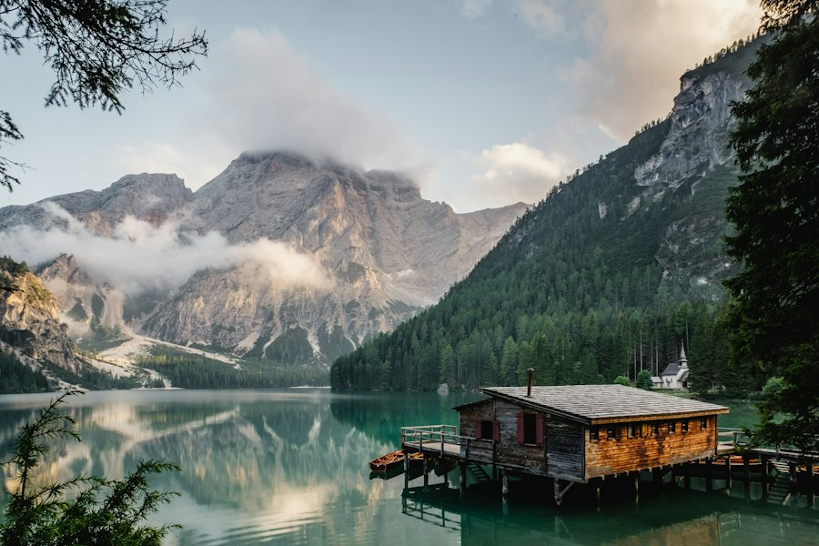
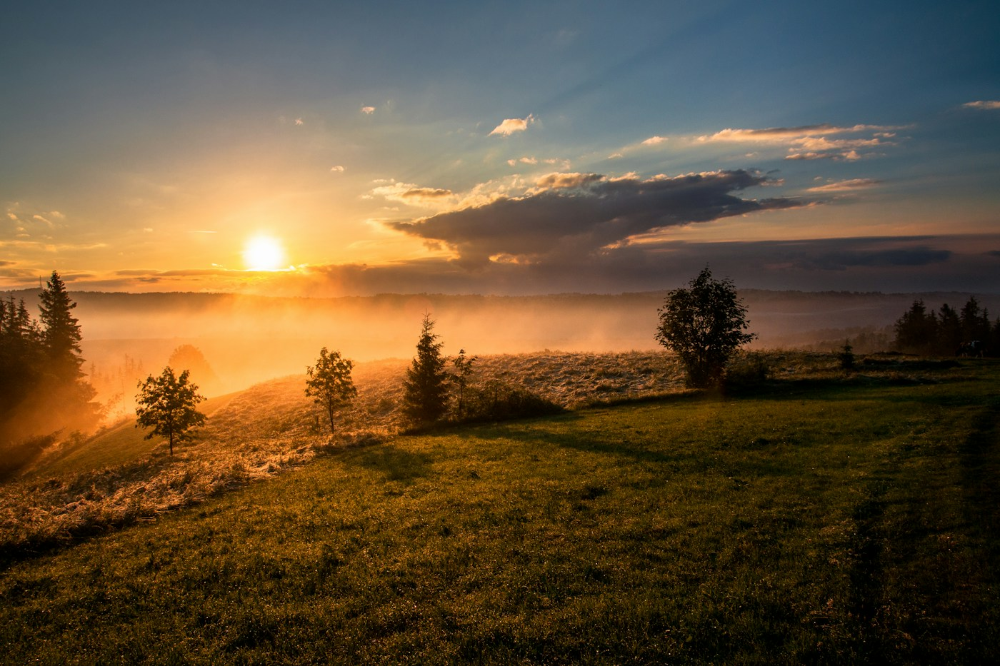
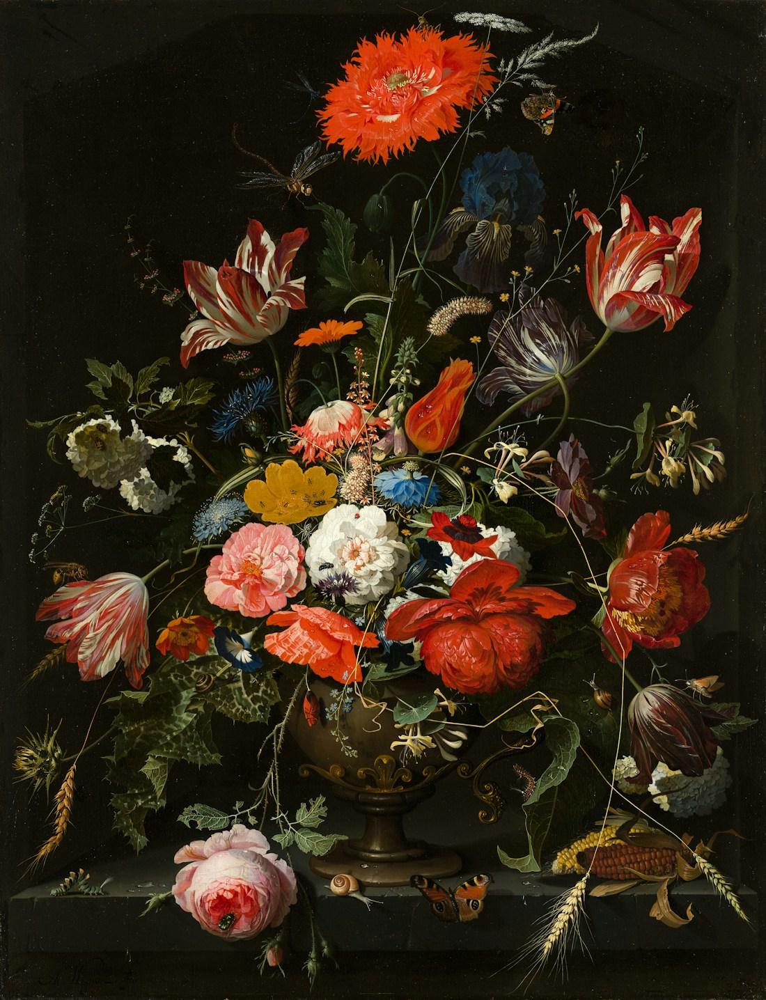

01 / O hábito
Tomar sombras por coisas
O que é familiar pode parecer a única realidade possível.

Platão · A República, Livro VII
Uma jornada filosófica sobre aparência, conhecimento e a coragem de olhar para a luz.
Entrar na alegoriaA saída começa com uma pergunta.
Imagine pessoas que passaram a vida inteira olhando para uma parede. Para elas, as sombras projetadas ali são o mundo todo. Até que uma delas se liberta, encontra a origem das imagens e descobre algo que nunca poderia imaginar.
Com essa narrativa, Platão nos convida a perguntar como aprendemos, no que acreditamos e o que acontece quando uma certeza é colocada à prova.
Conheça cada etapaA alegoria acompanha uma transformação: perceber que existe mais do que aquilo que sempre vimos.
O que é familiar pode parecer a única realidade possível.

Aprender exige rever o que parecia certo e se acostumar a ver de outro modo.

Quem volta à caverna encontra dificuldade para explicar o que viu.
A educação não é como alguns a proclamam: colocar conhecimento numa alma que dele carece. É uma conversão da alma inteira.
Leitura inspirada em A República, Livro VII

Olhar também é aprender.A caverna pode ser lida como uma reflexão sobre educação, informação e os limites da nossa própria perspectiva.
Explorar o mito